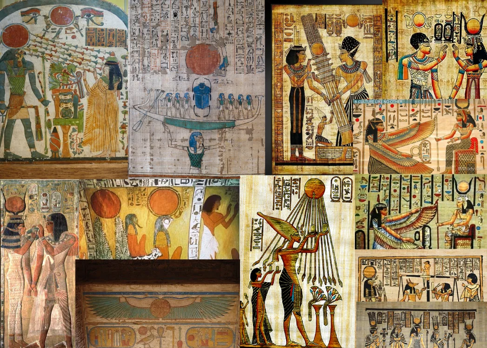
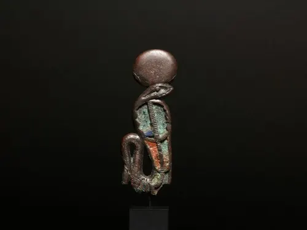
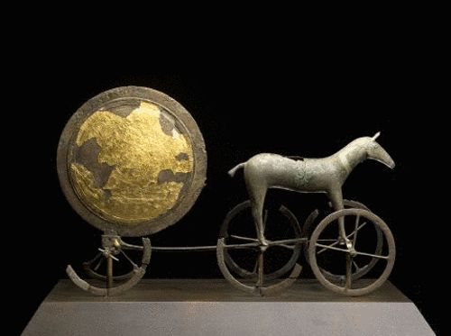

SUN
Introduction
According to the Oxford English Dictionary, the word "Sun" comes from many sources, including the Latin "Sol". The Old English "Sunne" likely derives from the old Germanic "Sunne"; both attached a feminine gender to the “heavenly body.” There exist several variants of the word in other languages, such as "Zon" or "Zonne" (Dutch), "Sunna" (Old High German, Gothic, and Old Norse), and "Sonne" and "Son" (Middle German). An Old Irish cognate is "Fur-sunnud", meaning “lighting-up.”
History
EGYPTE

In Ancient Egyptian art, depicting the sun (the solar disc representing the god Ra) in red was a deliberate choice steeped in profound symbolism. The color red represented the fiery and scorching nature of the sun, particularly at sunrise and sunset when its glow is most intense. Ra was envisioned as a glowing red disc traversing the sky in his solar barque, symbolizing both the source of life and a destructive force. This hue is inextricably linked to Ra and the "Eye of Ra," where red conveys divine wrath and fierce protection. In the ancient Egyptian language, red signified "victory" and "power," making the crimson solar disc a potent icon of life-giving light and incinerating strength.
Some theories propose the intriguing hypothesis that the sun was not always as we see it today. These researchers believe that in ancient times, the sun appeared consistently redder, either due to its inherent nature or the different composition of Earth's atmosphere. Proponents of this hypothesis base their argument on the striking similarity in depictions of the sun as red across diverse civilizations such as Egypt, Mesopotamia, and Mesopotamia. According to them, the ancient Egyptians and others were not "symbolizing" power with the color red, but rather accurately depicting what they actually saw in their ancient skies.

The Solar Disc is the primal and most essential representation of the god Ra, depicted as a golden or crimson orb embodying the sun itself. This disc is frequently encircled by the royal cobra, the Uraeus, coiled in a protective stance to repel cosmic enemies. This icon symbolizes the sun at midday, representing the zenith of "pure divine energy." To the ancients, the disc was not merely an image but a "transmission portal" of cosmic sovereignty, simultaneously bestowing life and incinerating chaos.
CHINESE
Since the Shang and Zhou dynasties, the Chinese developed sophisticated astronomical instruments, including sundials, armillary spheres, and ecliptic rings, to precisely measure solar movement, equinoxes, and solstices. The Chinese agricultural calendar was entirely predicated on the sun's daily path. This led to the Gai Tian cosmological model, which depicted the heavens as a celestial dome over a flat earth, with the sun revolving in structured orbits. To the ancient Chinese, astronomy was the language of the heavens, and the Emperor, as the "Son of Heaven," was tasked with maintaining the resonance between terrestrial frequencies and solar cycles.
The Bunan tribe of Taiwan places profound mystical value on the Sun. The iconic Sun Moon Lake is shrouded in their ancient myths and legends, preserved through centuries. Each day, the "magical" sun glistens over the still, beautiful waters, a phenomenon the tribe perceives as a "celestial transmission" between the essence of the heavens and the depth of the earth. In their cosmology, this lake serves as a cosmic fulcrum where light and water converge to catalyze life and spiritual abundance.
GREEC

In Ancient Greek mythology, the Sun was envisioned not as a celestial sphere, but as a blazing golden chariot drawn by four fiery winged horses (Pyrois, Aeos, Aethon, and Phlegon). This majestic vessel was commanded by the god Helios—and later Apollo—who traversed the sky daily in a strictly governed orbit to maintain cosmic equilibrium. The tragic myth of Phaethon, who attempted to drive the chariot and lost control, nearly incinerating the Earth, serves as a primordial warning: "Solar Sovereignty" requires absolute divine mastery, and any disruption to this celestial frequency results in global catastrophe.
Around 500–428 BCE, the Greek philosopher Anaxagoras delivered a profound shock to the collective consciousness. He rejected the traditional myth of the god "Helios" and his chariot, proposing instead that the Sun was not a deity, but a "fiery red-hot stone" slightly larger than the Peloponnese. This audacious "scientific" claim stripped the Sun of its sovereign divinity, reducing it to a physical mass governed by natural laws. Consequently, he was charged with impiety, leading to his imprisonment and eventual exile—marking one of history's earliest confrontations between material rationalism and the institutionalized "Solar Religion."
OCEANUS
For the Aborigines of Australia, the Earth and all existence lay asleep until the Dreamtime, the pivotal era when life erupted. The Sun burst forth and warmed the Earth, revitalizing the waterholes and animating the landscape. Subsequently, the Ancestors gave birth to their children, who formed the tapestry of all living things, from flora to fauna. This cosmogony portrays the Sun as the "Frequency Awakener," transitioning existence from a state of static slumber to one of dynamic consciousness.
Theories
Many flat Earthers believe that the Sun is small and very close (only about 5,000 km above the Earth), rotating like a light bulb on a flat disk inside a dome.
The Electric Universe movement proposes a revolutionary paradigm known as the Electric Sun Model, which suggests that the Sun is not an internal nuclear reactor, but rather a plasma sphere acting as an "Anode" (positive electrode) within a vast cosmic electric circuit. According to this view, the Sun does not generate its energy from within; instead, it is powered by galactic electrical currents flowing through surrounding space. This model provides compelling explanations for anomalies that challenge conventional science, such as why the Corona is millions of degrees hotter than the solar surface and why sunspots and solar flares manifest as massive electric arcs. It also addresses the long-standing "Solar Neutrino Problem" by suggesting that the lower-than-expected neutrino count is due to the Sun's primary engine being electrical rather than purely thermonuclear. These theories are currently being tested in laboratory environments via the SAFIRE Project, promoted by scientists like Wallace Thornhill and the Thunderbolts Project team.
In the 4th century BCE, Aristotle proposed a cosmological vision that rendered the Sun a uniquely transcendent entity. He believed the Sun was not composed of the terrestrial elements (Fire, Air, Water, Earth), but of a divine fifth element known as Aether. Aristotle envisioned the Sun as a perfect sphere of incandescent Aether—an eternal, incorruptible substance that never decays. For him, its perfectly circular form was a requirement of "Celestial Perfection." Although perceived as yellow or red, he maintained its true essence was a radiant "Golden-White," with its observed colors being mere atmospheric distortions. Unlike terrestrial fire, the Aristotelian Sun was a celestial body that radiated light without the consumption of fuel.
In the 6th century BCE, the philosopher Anaximenes proposed a distinctive cosmological vision, depicting the Sun as a "flat disc" or a thin leaf of condensed, incandescent air. He maintained that Air was the Arche (prime element), and the Sun was the result of this air becoming rarefied and ignited through cosmic motion. Anaximenes envisioned the Sun floating above a flat Earth, revolving around it like a fiery, reddish orb. This view bridges primordial myths—which saw the Sun as a wheel or a shield—with an early physical theory that identifies "ignited air" as the vital driver of the cosmos.
In the late 16th century, the Italian philosopher Giordano Bruno proposed a revolutionary vision that shattered existing boundaries. He did not view the Sun as the unique center of the universe, but rather as an "ordinary star" among billions in an infinite cosmos. To Bruno, every star was an "infinite sun" potentially hosting other inhabited worlds. He blended early science with mystical philosophy, depicting the Sun as a radiant "Golden-White" entity embodying the "Divine Infinite." This vision—which stripped our Sun of its exclusive status and repositioned it within a vast cosmic tapestry—was deemed a major heresy, leading to his execution by fire in 1600. Thus, he became the "Martyr of Infinity."
In the 6th century BCE, Anaximander proposed a surreal and unique cosmological vision. He described the Sun (along with the moon and stars) not as spherical bodies, but as massive "Fiery Rings" encased in dense mist or vapor. What we perceive as the Sun is actually a "vent" or a "breathing hole" in that flaming ring, akin to a nozzle through which fire erupts. Anaximander envisioned this ring revolving around a flat Earth, with the surrounding mist concealing the true magnitude of the fire-ring, allowing only this singular "hole" to appear as a blazing reddish or orange disc.
The Greek philosopher Heraclitus (famed for "Panta Rhei" – everything flows) proposed a uniquely dynamic vision of the Sun; he viewed it not as a static body, but as a process of perpetual change and constant renewal. Heraclitus believed that daylight resulted from "bright exhalations from the sun," while night was caused by dark exhalations from the earth. To him, the Sun is "new every day," acting as a cosmic torch that ignites and recedes in a never-ending cycle. This renders solar light and heat part of the "Logos" (universal reason), binding opposites in a seamless, continuous flow.
Works
During the transition from summer to winter, the sun moves south away from the northern hemisphere, appearing smaller in the sky. This shift brings colder, shorter days, causing crops to wither and nature to die. The ancients perceived winter as the "Death of the Sun." Astronomically, the sun stops its southward progression on December 22nd and remains at the same degree for three days over the Southern Crux (Cross) constellation. Thus, the metaphor was born: the sun "dies on a cross" for three days before beginning its rebirth and ascent back toward the north.
Research
In their renowned educational feature, "What Color do YOU think the Sun is?", the Stanford Solar Center elucidates that the Sun is not yellow, orange, or red, as commonly depicted in art and popular culture. The scientific reality is that the Sun emits a complex mixture of all spectral colors, which, when combined, appear to the human eye as a brilliant white. The center emphasizes that our perception of a "colorful" Sun is a consequence of atmospheric scattering and terrestrial viewing conditions, rather than a reflection of its true physical identity.
In his compelling segment on "StarTalk" (titled: "Things You Thought You Knew"), astrophysicist Neil deGrasse Tyson shatters a common myth: the Sun is not yellow; the Sun is actually white. Tyson explains that our atmosphere is responsible for this "visual deception," as it scatters blue light (rendering the sky blue) and allows only the yellow-to-red spectrum to reach our eyes. His definitive proof: snow remains brilliantly white under the midday sun; if the Sun were truly yellow, the snow would reflect that yellow hue. In the vacuum of space, solar light is a pure, blinding white, encompassing all visible frequencies of the spectrum.
In his detailed article, "What Color Is the Sun? An Astrophysicist Answers," Ethan Siegel elucidates that the Sun appears purely white to the human eye when viewed from space or high in the sky. Despite its stellar classification as a "G-type star"—traditionally labeled a "Yellow Dwarf"—Siegel clarifies that the Sun emits a balanced mixture of all visible wavelengths, which our eyes perceive as white. He emphasizes that the "yellowish" appearance is merely an atmospheric effect; as the Sun nears the horizon during sunrise or sunset, the atmosphere filters out shorter wavelengths, leaving only the warmer, distorted hues to reach the observer.